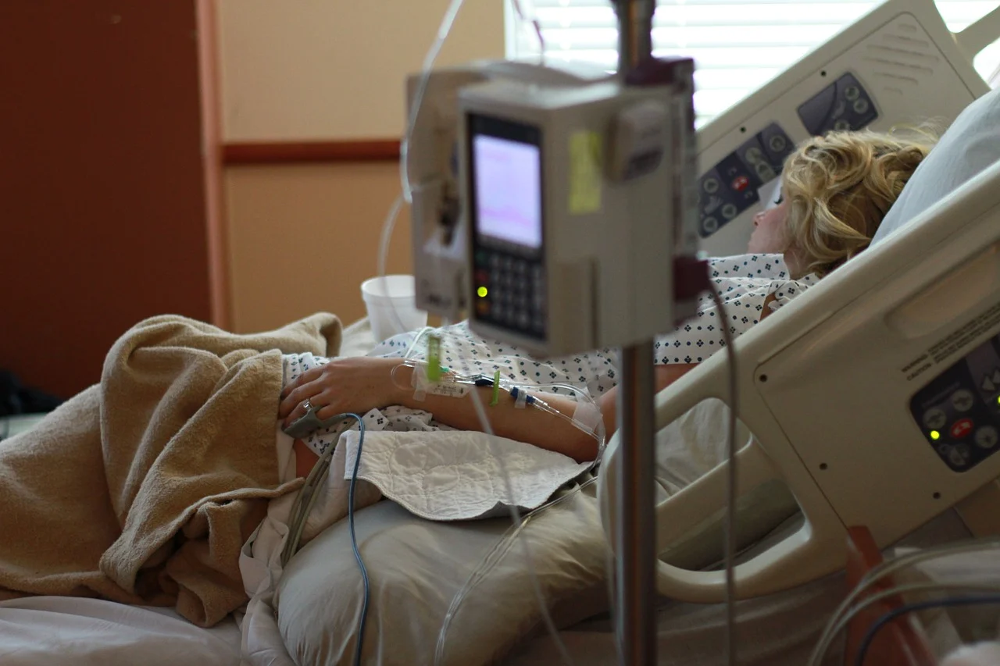

Who needs your help?
Who needs your help?

Who needs your help?

This website was made to help you donate to the best charities in the world. Our team has spent
countless hours researching and evaluating the efficiency, accountability and governance of
nonprofit
organizations in order to educate the public about the importance of wise giving, and to inform the
public of
wasteful or unethical practices of nonprofits, and provide recognition to highly effective and
ethical
charities.
We regularly update our list of charities. Sign up to recieve updates.
Click on an issue above that is important to you, learn more, and please donate!
How do you decide which charities are reliable?
Our analysts perform in-depth evaluations of complex charity financial reporting, including
audited
financial statements, tax forms, annual reports, state filings, and other documents. Once our
analysis
of a charity is complete and any required adjustments are made, we perform our end calculation,
and
then assign the charity a letter grade efficiency rating on an A+ to F scale.
Does Find Your Charity recieve any money from
donations?
No we do not. Our only goal is to make donating an easier experience.
How often do you update your list of charities?
We update every 10 weeks.